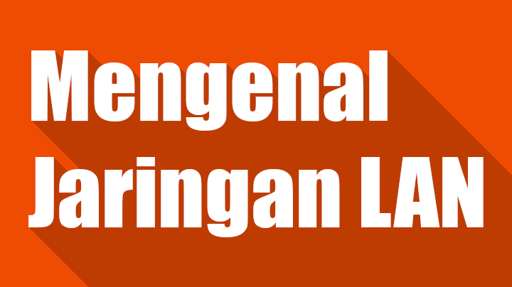

Local Area Network biasa disingkat LAN adalah jaringan komputer yang jaringannya hanya mencakup wilayah kecil, seperti jaringan komputer kampus, gedung, kantor, dalam rumah, sekolah atau yang lebih kecil. Saat ini, kebanyakan LAN berbasis pada teknologi IEEE 802.3 Ethernet menggunakan perangkat switch, yang mempunyai kecepatan transfer data 10, 100, atau 1000 Mbit/s. Selain teknologi Ethernet, saat ini teknologi 802.11b (atau biasa disebut Wi-fi) juga sering digunakan untuk membentuk LAN. Tempat-tempat yang menyediakan koneksi LAN dengan teknologi Wi-fi biasa disebut hotspot. Pada sebuah LAN, setiap node atau komputer mempunyai daya komputasi sendiri, berbeda dengan konsep dump terminal. Setiap komputer juga dapat mengakses sumber daya yang ada di LAN sesuai dengan hak akses yang telah diatur. Sumber daya tersebut dapat berupa data atau perangkat seperti printer. Pada LAN, seorang pengguna juga dapat berkomunikasi dengan pengguna yang lain dengan menggunakan aplikasi yang sesuai. Berbeda dengan Jaringan Area Luas atau Wide Area Network (WAN), maka LAN mempunyai karakteristik sebagai berikut :
Prinsip Kerja LAN , LAN dapat definisikan sebagai network atau jaringan sejumlah sistem komputer yang lokasinya terbatas didalam satu gedung, satu kompleks gedung atau suatu kampus dan tidak menggunakan media fasilitas komunikasi umum seperti telepon, melainkan pemilik dan pengelola media komunikasinya adalah pemilik LAN itu sendiri dari definisi diatas dapat kita ketahui bahwa sebuah LAN dibatasi oleh lokasi secara fisik. Adapun penggunaan LAN itu sendiri mengakibatkan semua komputer yang terhubung dalam jaringan dapat bertukar data atau dengan kata lain berhubungan. Kerjasama ini semakin berkembang dari hanya pertukaran data hingga penggunaan peralatan secara bersama. LAN yang umumnya menggunakan hub/switch, akan mengikuti prinsip kerja hub itu sendiri. Dalam hal ini adalah bahwa hub tidak memiliki pengetahuan tentang alamat tujuan sehingga penyampaian data secara broadcast, dan juga karena hub hanya memiliki satu domain collision sehingga bila salah satu port sibuk maka port-port yang lain harus menunggu. Itulah diantara kelebihan dan kekurangan jaringan LAN
Jaringan LAN merupakan jaringan komputer lokal yang digunakan untuk area terbatas seperti rumah ataupun sekolah. Jaringan LAN sangat mudah dibuat karena hanya membutuhkan beberapa peralatan dan setting pada komputer. Kali ini saya akan memberikan artikel singkat 'Cara Membuat LAN Sendiri' pada windows 7 .
Router adalah jantung pada sebuah jaringan. Router berfungsi untuk menghubungkan jaringan satu dengan jaringan lain. Dalam kasus ini, router menghubungkan jaringan internet dengan jaringan LAN .
Ethernet card adalah sebuah adapter untuk mencolokkan kabel ethernet sehingga komputer bisa tersambung menuju jaringan. Biasanya, pada komputer-komputer terbaru, kartu ini telah disematkan secara onboard sehingga anda tidak perlu untuk membeli lagi.
Yaitu kabel yang digunakan untuk menghubungkan komputer ke router atau bisa juga komputer satu dengan komputer lain. Ujung pada kabel ini diberi sebuah konektor yang disebut RJ-45. RJ-45 memiliki 2 settingan, yaitu straight dan cross. Straight digunakan untuk menghubungkan komputer ke router, sedangkan cross digunakan untuk menyambungkan komputer langsung dengan komputer.
Jika anda ingin menghubungkan jaringan anda ke internet, maka anda juga harus membeli sebuah modem. Jika anda tidak membeli sebuah modem, maka komputer anda hanya bisa berkomunikasi dengan komputer lain yang terdapat pada jaringan LAN tersebut.
Crimping tool, LAN tester, gunting, Multimeter. Crimping tool digunakan untuk menyambungkan RJ-45 dengan kabel ethernet. LAN tester digunakan untuk testing kabel LAN telah berfungsi atai tidak. Sebagai alternatif untuk mempercepat ataupun mempermudah pekerjaan anda, anda bisa meminta tolong kepada penjual kabel ehternet misalnya untuk sekaligus memasangkan RJ-45 sehingga anda tinggal memasangkan kabel-kabel tersebut menuju router dan komputer. Sebelum menyiapkan peralatan di atas. sangat disarankan anda melakukan perencanaan terlebih dahulu, yaitu meliputi jumlah komputer, luas area, dengan begitu anda bisa membuat rancangan kabel yang efektif sehingga bisa menghemat biaya yang dibutuhkan. Anda bia menggunakan software seperti paint untuk membuat rancangan penataan jaringan LAN anda. Setelah itu, barulah anda beli perlengkapan yang diperlukan dan pasangkan perlatan-peralatan di atas. Berikut adalah model yang akan kita pakai untuk membangun jaringan LAN. Sumber gambar (microsoft.com)
ICS bertujuan untuk membagikan koneksi internet komputer host menuju komputer lainnya. Untuk mengaktifkan ICS pada komputer server, silahkan buka Control Panel, klik Network and Internet, klik Network and Sharing Center, klik Change Adapter Center, Klik kanan pada koneksi yang ingin anda bagikan, klik Properties, klik tab Sharing, lalu centang kotak Allow other network users to connect through this computer’s Internet connection, simpan. Oke, sampai tahap ini, hanya komputer server yang bisa terhubung ke internet Setelah koneksi dibagikan, maka masing-masing komputer harus mendapatkan IP address. Caranya,